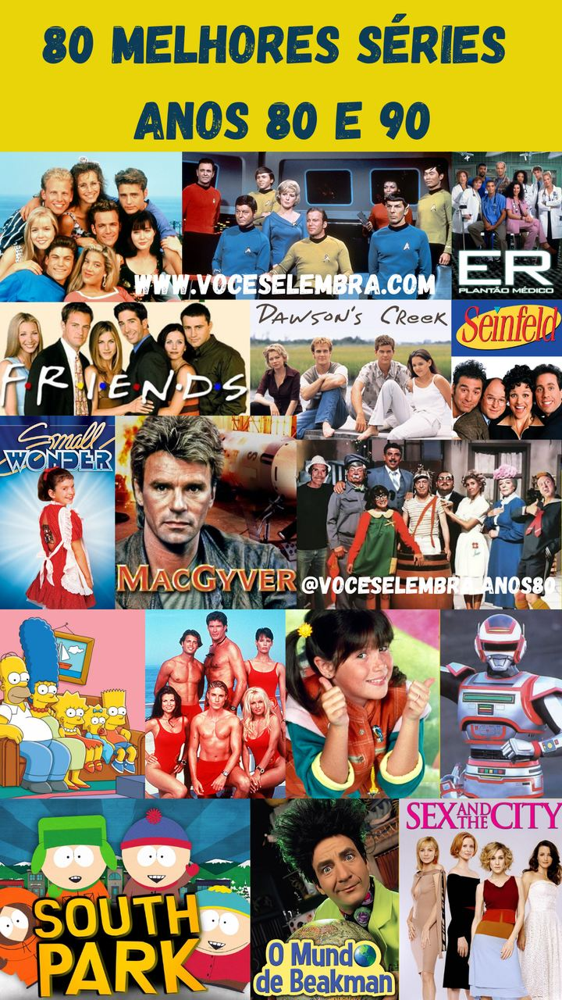
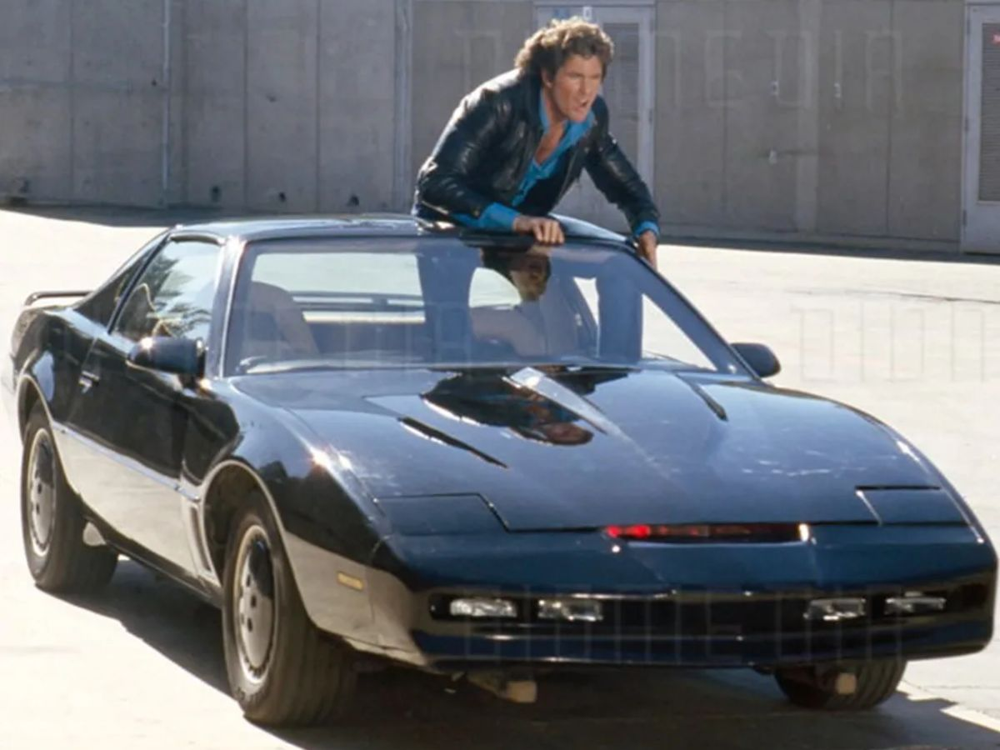
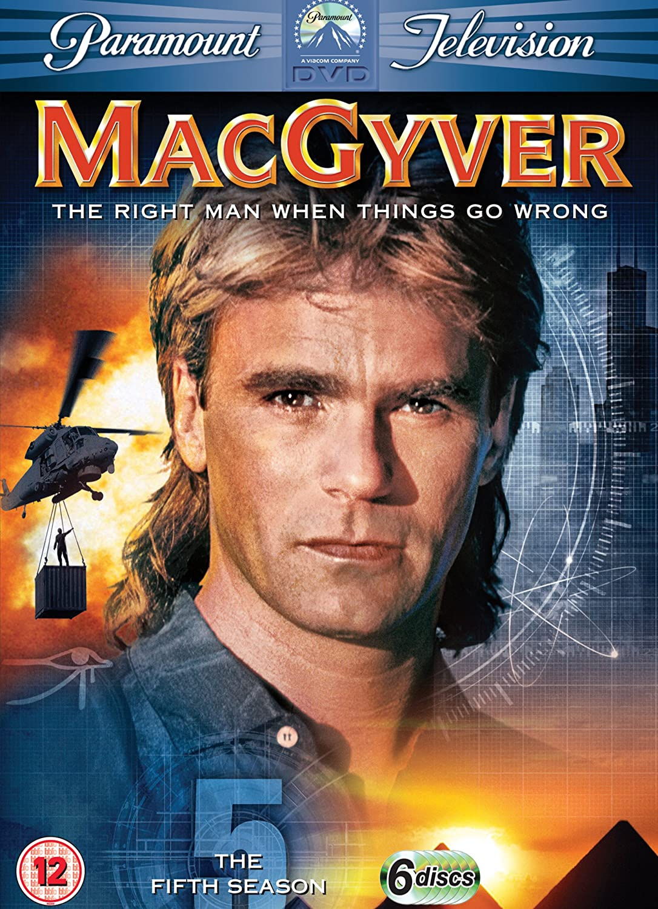
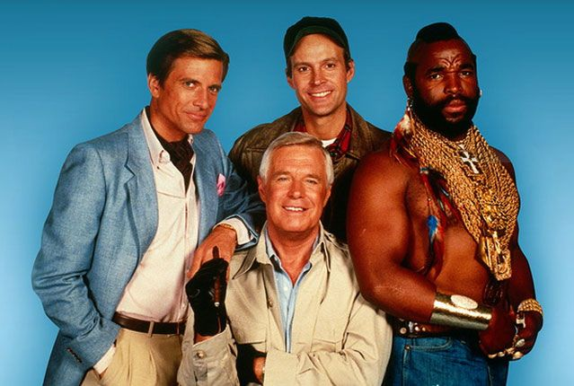
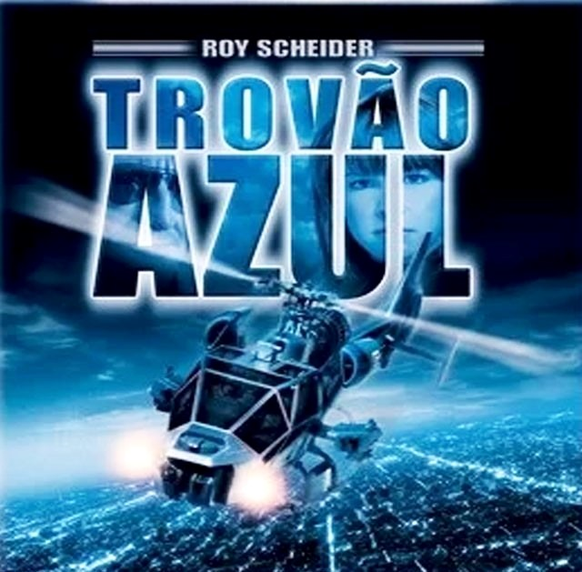

Página Principal
Séries dos Anos 80
Uma viagem nostálgica aos programas de TV que marcaram os anos 80, repletos de ação, aventura e personagens icônicos.
A Supermáquina
Em 'A Super Máquina', um talentoso piloto e seu carro superinteligente, dotado de inteligência artificial avançada, unem forças para combater o crime e desvendar mistérios, enquanto enfrentam desafios emocionantes e se tornam uma dupla imbatível.
MacGyver - Profissão Perigo
Em 'MacGyver - Profissão Perigo', um agente altamente habilidoso utiliza sua inteligência e conhecimentos científicos para escapar de situações perigosas e resolver missões impossíveis, usando apenas objetos comuns e improvisando soluções engenhosas.
Esquadrão Classe A
Na série 'Esquadrão Classe A', um time especial de soldados foragidos une suas habilidades únicas e estratégias ousadas para realizar missões secretas, enquanto tentam limpar seus nomes e desvendar uma conspiração que os envolve, em meio a ação e adrenalina sem fim.
Trovão Azul
Em 'Trovão Azul', um piloto de helicóptero talentoso e destemido se une a um veículo de alta tecnologia chamado Trovão Azul para combater o crime, resgatar reféns e enfrentar desafios aéreos perigosos, enquanto desvendam mistérios e protegem a justiça.